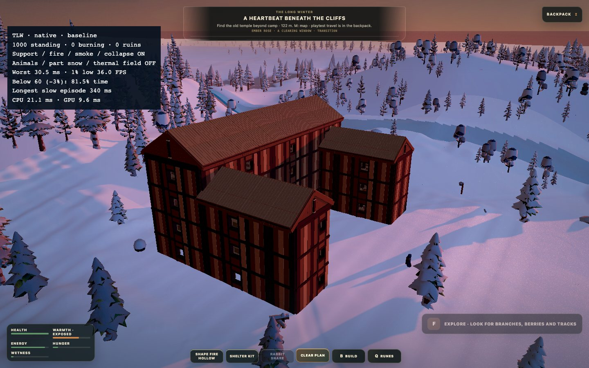
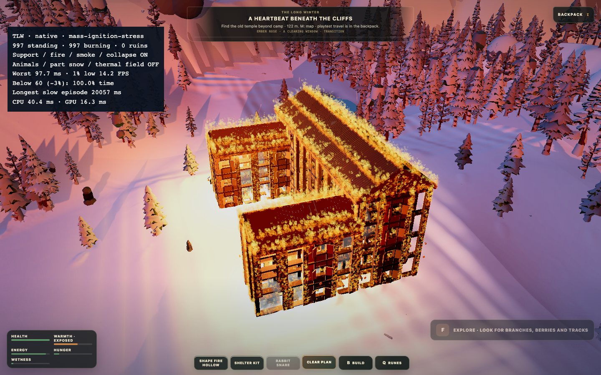
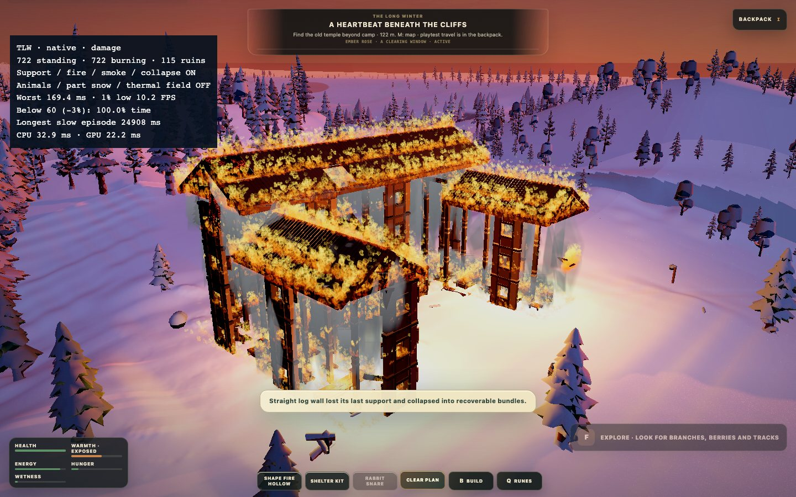
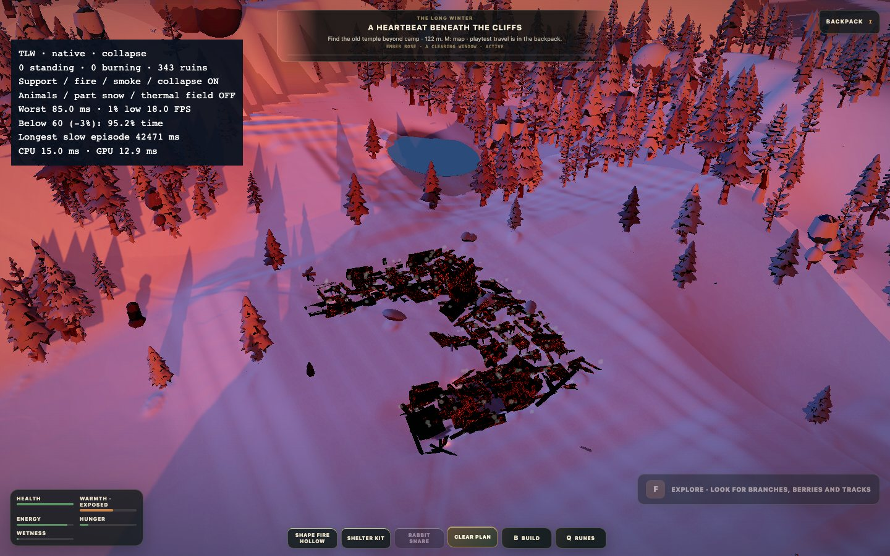
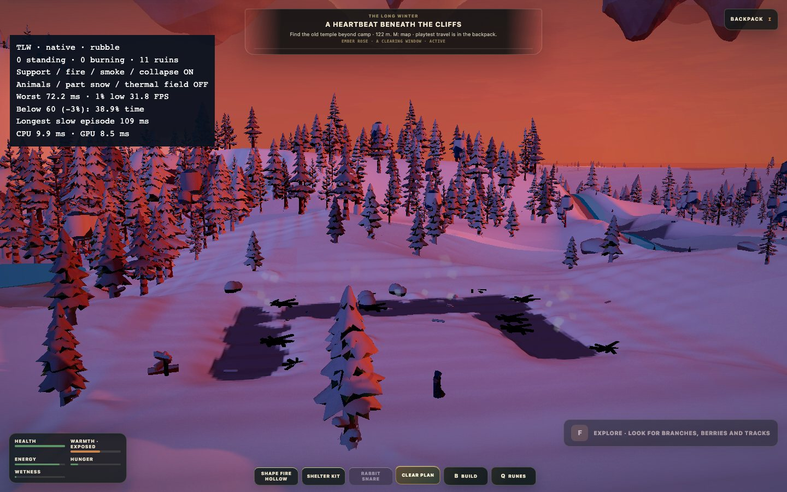

Takaisin peliinThe Long Winter · R37
Palon esitysvalmistelu, renderöintitilan palautus ilman ruutukohtaisia sulkeumia, paikallinen savugeometrian mitätöinti ja sortumajonon budjetointi.
R37-ehdokasta ei julkaista peliin tämän mittauksen perusteella. Puhtaassa vertailussa vaurioitumisen p99 heikkeni 50,7 → 62,0 ms ja yli 50 ms ruutujen aika kasvoi 0,517 → 2,279 sekuntiin. Sortumisen vastaava hidas aika väheni 1,490 → 0,868 sekuntiin, mutta se ei kumoa vaurioitumisen takapakkia. Pelin oletusversio säilyy R36:ssa. Tämä on mittausraportin, ei uuden peliversion julkaisu.
Yksittäinen parantunut mittaus ei todista 60 FPS:n tavoitteen täyttymistä. Ensimmäisissä kolmessa ajossa havaittiin muu raskas Chrome-istunto. Käyttäjä sulki sen ennen kahta vasemmanpuoleista vertailuajoa. Taustakuormallisia ajoja ei käytetä puhtaan A/B-parin korvikkeena.
p99 / pahin ruutu (ms)
1 % low (FPS) / alle 60 FPS:n aika
Hitaan ajan toleranssi 3 %: ruutuaika yli 17,18 ms.
Yli 50 ms ruudut: määrä / yhteenlaskettu aika
Rajaus
Sama 1000 osan tallenne, 914 rakenneosaa ja 86 sisustusosaa. Kamera kiertää eri korkeuksilla ja etäisyyksillä. Palo, tuki, savu ja sortuminen päällä; eläimet, osien pintalumi ja lämpökenttä pois jo verrokissa. Kokeellisia piirto- tai hiukkasmääräkytkimiä ei otettu käyttöön.
Chrome headless, 1440 × 900, DPR 1, Apple M1 Pro / ANGLE Metal. Ei samanaikaisia build- tai yksikkötestiajoja. Ei Windows/Edge/RTX-mittausta. Eri ajojen simulaatiot eivät ole ruutu ruudulta identtisiä.
Raakadata: R36, muu Chrome suljettu · R37, muu Chrome suljettu · R36 A1, taustakuorma · R37 B1, taustakuorma · R37 B2, taustakuorma · yhteenveto
Rajattu CPU-koe
Renderöinnin palautusloki, 10000 kirjoitusta/kierros, A–B–B–A: R36 p99 0,548 / 0,570 ms; R37 0,456 / 0,332 ms. Tämä aliohjelma parani, mutta tulos ei ole FPS-mittaus eikä riitä koko paketin hyväksymiseen.
Toiminnalliset testit
98 tiedostoa / 918 testiä läpi, TypeScript ja tuotantobuild läpi. Rakennuskontrollien oikea selain-DOM-testi läpi. Kaikki viisi paloajoa päättyivät ilman raportoituja selainvirheitä ja ilman seisovia rakennusosia. Kokeellisia piirtokytkimiä ei aktivoitu.
Kuvat (r37-clean)

native-baseline.jpg
native-mass-ignition-stress.jpg
native-damage.jpg
native-collapse.jpg
native-rubble.jpg
Kuvakaappaukset otettu mittausvaiheiden välissä. TLW-FIRE-RUNTIME-2026-09-13-R37.